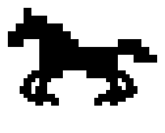
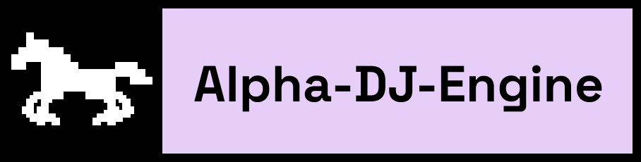

8 Frames, Transversalgalopp mit Schwebephase. Blickrichtung nach links.
Erzeugt aus dem Pferd der Wortmarke — siehe horse-gallop/README.md.

Selbsttragendes SVG — das CSS steckt in der Datei, die Wortmarke ist als PNG
eingebettet. Läuft deshalb auch als <img src>, ohne Schrift
nachzuladen.
